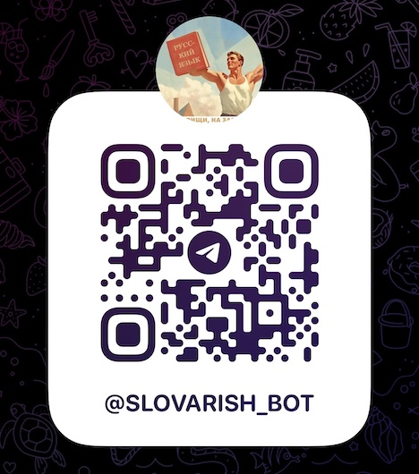
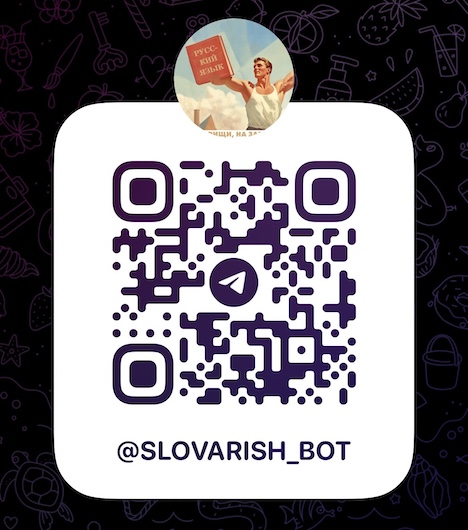

(If you've come here from Reddit, thanks for clicking through!)
I originally tried to promote my project on Reddit, but my first post was shadow-deleted due to the Telegram links (which use URL shorteners), and my second post failed to gain traction since people probably did not want to manually piece together the URLs themselves.
I would like to announce the launch of a Telegram bot I have been working on almost nonstop for a couple months now. It is a Russian→English dictionary for learners in chatbot form and, in a way, the latest reincarnation of the Slovarish web app I created last year. However, now that my Russian is much better (not necessarily good, just better!), I was able to create something much more useful.
Here's the URL: https://t.me/slovarish_bot
Read more about the origin story of the bot and a detailed overview of it at the links below:
На русском: [Часть I] [Часть II]
 
